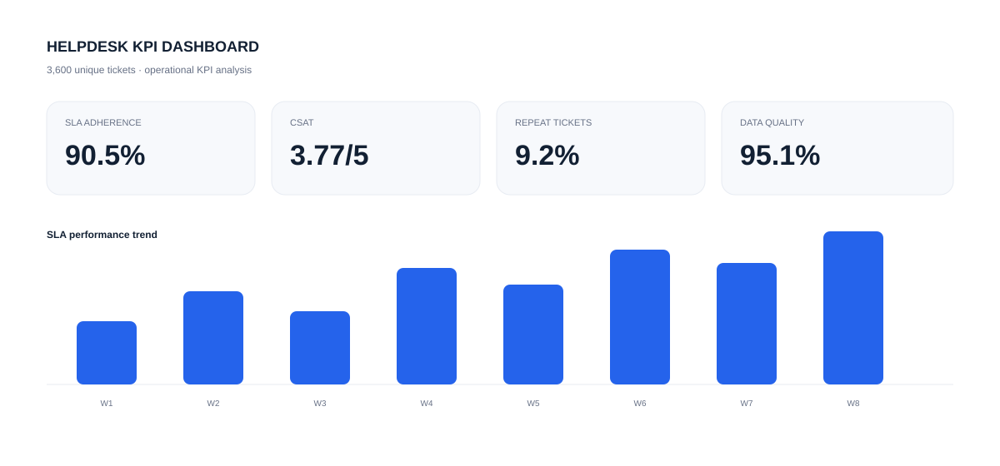

Turning operational data into decisions.
I’m Sajid Manzoor, an Operations Analyst focused on data analytics. I turn messy operational data into reliable KPIs, dashboards and clear business insights.
Proof over promises.
Projects built around data cleaning, KPI analysis, validation and operational reporting — with the analysis and reasoning visible.

Helpdesk Ticket KPI Dashboard
Cleaned 3,672 raw ticket rows into 3,600 unique records and built a KPI workflow across Python, SQL, Power BI and Streamlit.
Explore case study →BI Validation
Reconciliation, issue classification and row-level validation designed to make reporting more trustworthy.
Explore project →KPI Operations Dashboard
Operational KPI reporting focused on service performance, trends and management visibility.
View project →Executive Operations Dashboard
Leadership-focused reporting that turns operational measures into a concise decision view.
View project →CRM Data Quality
Record-level validation, duplicate handling and quality checks for cleaner reporting.
View project →Microsoft Security Investigation Lab
Endpoint alert triage, Sentinel, KQL investigation, MITRE ATT&CK mapping and security-operations KPI analysis.
 View project →
View project →What I bring to the table.
Technical analysis paired with an operations mindset: understand the question, validate the data, then communicate what matters.
Joins, CTEs, aggregations, window functions and deduplication.
KPI reporting, data models, validation and decision-focused dashboards.
Pandas-based cleaning, transformation, validation and analysis.
Reconciliation, missing values, duplicates and documented checks.
Simple process. Solid analysis.
Understand the data
Review fields, definitions, missing values, duplicates and assumptions before calculating metrics.
Build reliable metrics
Use SQL and Python to clean, validate, transform and analyze the underlying records.
Make the result clear
Turn validated findings into focused dashboards and concise business insights.
Let’s turn data into something useful.
I’m interested in Data Analyst, BI and analytics-focused operations roles where I can work with structured data, investigate business questions and improve reporting quality.